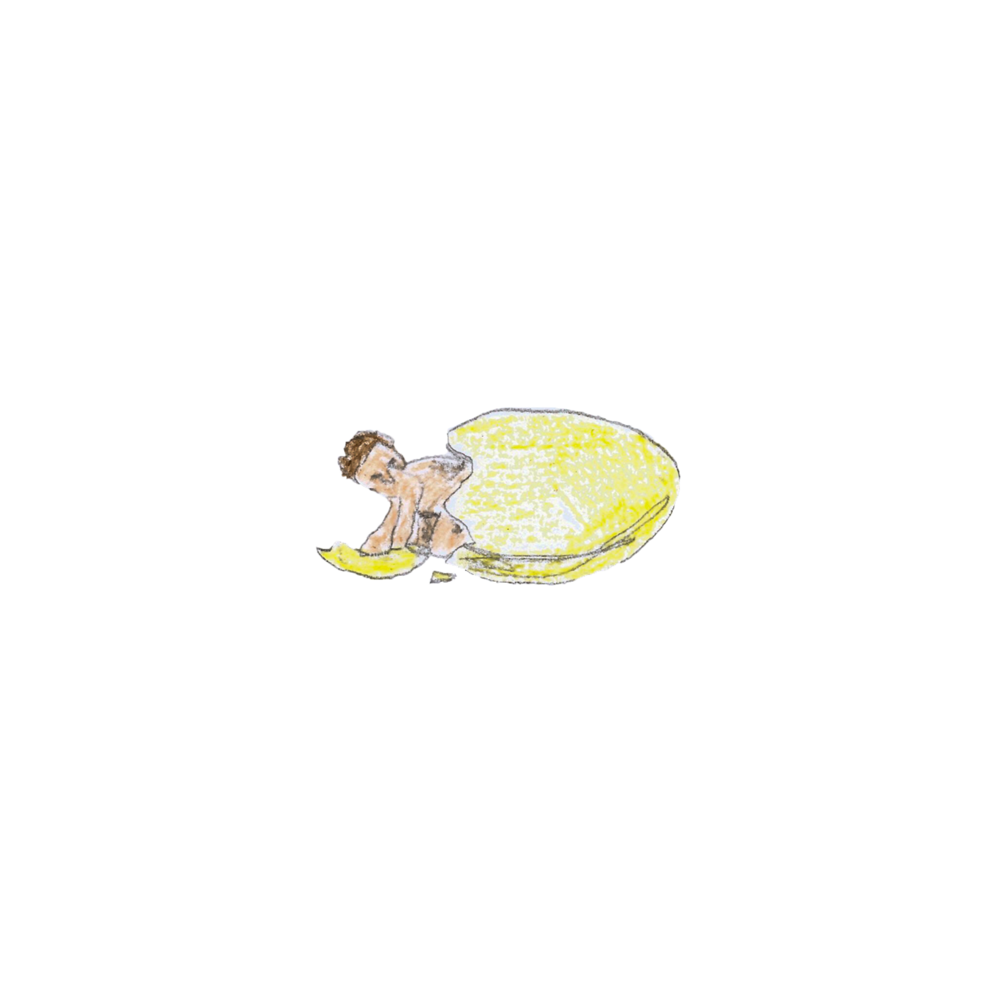

Elias ( b. 2002) is a visual artist based in Tallinn, currently studying at the Estonian Academy of Arts. Working with photography, video, and film, his practice moves between still and moving images exploring how sequencing and rhythm can produce or eliminate movement. He is drawn to abstract images that resist immediate recognition, creating space for personal and open narratives. His work draws from domestic environments, routine, and moments in transit. He has also studied at the Academy of Fine Arts, Uniarts Helsinki and Rhode Island School of Design.
